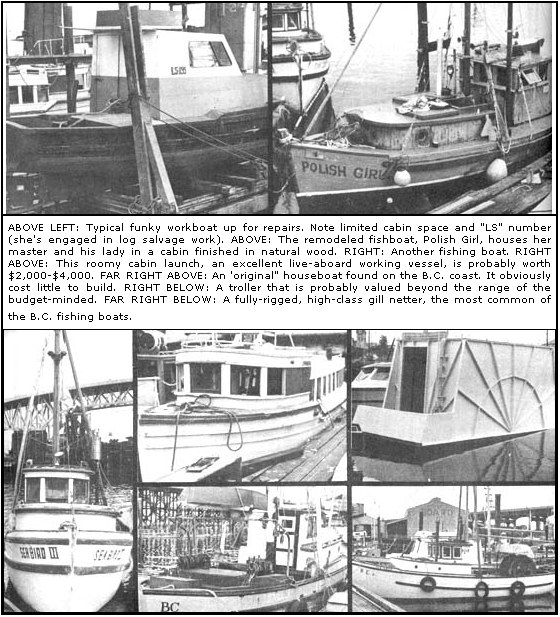
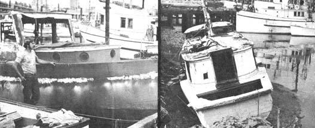

How We Found A Live-Aboard Boat In B.C.
By Cliff Houff, Guy Du Lac & Jacob Weierman
July/August 1972
British Columbia, Canada is a fertile hunting ground far those folks into boat living. The large fishing industry here spins off whole fleets of used vessels in a variety of types and sizes not matched in many places. These older boats are often available at very reasonable cost, especially after losing their commercial licenses and becoming a liability to their fisherman-owners.
As these are work vessels, most are deep-drafted, roomy . . . and thus quite seaworthy and comfortable. Many are exceptionally well built-rugged enough for continued commercial work -and adapt well to the needs of someone seeking a home/transportation/possible-income situation.
We spent six weeks stalking the waterfronts of the southern B.C. coast in search of a boat which would meet all of most of the following requirements: (1) seaworthiness and soundness of hull; (2) potential livability for three . . . or at very least, two; (3) a good motor, preferably running; (4) potential for commercial use including fishing, towing, hauling, etc.; (6) esthetic appeal; (6) and most important, err unusually low price . . . preferably under a thousand dollars.
By arduous searching we found several boats which satisfied most of these requirements, and one-the one we got-which satisfies them all!
Following is what we learned about boathunting in B.C., including why we settled on certain types of vessels as being best suited to the purposes given above.
Of the numerous types of watercraft available in B.C., the fishboat seems to offer the best deal to those seeking a live-aboard home, This isn't to say that other vessels might not prove more suitable to some folks . . . in fact, we didn't get a fishboat ourselves. A large percentage of the used watercraft we located, however, was fishboats . . . and they filled more of the abovementioned requirements more often than any other kind of vessel we inspected.
Sailboats are attractive, but have serious disadvantages. Such craft, to serve as both work and home bases, must be large . . . practically speaking, that means a length of at least 45 feet to house two people. Sailing boats also must be built with low, streamlined superstructures to give boom clearance and to avoid wind resistance. They're not generally beamy (wide) and thus have reduced living space. Finally, sailboats are almost universally expensive, far outside the scrounge budgets of most would-be boat livers.
We also ruled out houseboats even though there are a surprising number of them (some converted from fishing or river vessels) here in B.C. We decided against these craft in spite of their roominess and general livability, because most houseboats aren't powered (and thus require the expensive services of a tug to move around) and because they're not seaworthy enough for open water travel.
We were left, then, with two possible choices besides fishboats: tugs, and the odd "mongrel" vessel. The latter are craft which are highly specialized, such as log salvage boats or nondescript general workboats.
Of the two additional choices, tugs have the most going for them. They're usually well constructed and roomy-with powerful motors and large propellers-and sometimes have living accommodations already aboard. Tugs also are plentiful, at least in the B.C. area.
But inexpensive tugs are usually "hull only" and require expensive fitting-out to make them into homes. The older ones often have yellow cedar hulls too . . . which, although strong when new, are the favorite lunch of toredoes (saltwater woodboring worms).
The most likely buy, then, is still the fishboat and the B.C. variety comes in a wide selection. Gill netters are commonest, range from 28 to 35 feet in length, have a small pilothouse, a cabin forward, an open afterdeck usually containing a huge drum for nets and engines of between 20 and 30 horsepower. They're often of Japanese design-with graceful, unpretentious lines-and look like home to those of us why view the Chris-Craft type of vessel as an offense against nature.
Used troller, seiner and packer fishboats also are available, in about that order. The first two are generally larger than gill netters which upgrades their suitability for our purposes . . . but also elevates their price. We didn't find any trotters or seiners within our budget . . . but you may well have better luck. Nor did our search turn up a single packer-a fish transporter ranging up to 100 feet in length-at all. Again, our luck will not necessarily be yours and any of these three fishing boats has good living/working potential.
FINDING A BOAT
There's no sure key to finding the boat-home you want, nor much to be said that will significantly narrow the area you'll have to cover to do a thorough search. "The odd boat" can be encountered anywhere on the waterfront, even where there are few or no other vessels nearby. The more area you cover, the better your chances of finding what you really want.
Keeping that in mind, we'll give you a rough idea of how to mount a search on both sides of Vancouver Island and up the southern coast of B.C. We covered all of that area that's accessible by road and, in general, we found Vancouver and the Fraser Delta to be the best single locale for a B.C. boathunt. Victoria and environs ran a close second.
First off, a few general guidelines for the boathunter:
FOLLOW EVERY LEAD, even the hazy and outlandish ones. We found several of the vessels we liked best, by accident, while trying to zero in on other alleged craft . . . which we usually didn't locate.
LISTEN! Don't be afraid to ask questions or seek advice. You'll meet lots of helpful and knowledgeable people. Once you learn to sort out what's said to you (you will meet less-than-knowledgeable folks . . . and even some fairly-crazed individuals on the water, as everywhere) you'll find the advice you get will help you locate a boat and prepare yourself to use the craft once you find it. Your conversations with folks who already live on the water will give you tips, hints and a feel for what to expect in boat life.
DON'T RUSH. Slow down and savor the feel of every marina you visit. Check each place out for yourself, even if people tell you that a particular boat harbor has absolutely nothing to offer. All you can lose is a little time . . . and hidden away in a marina full of yachts, you might well find just one old salt an an ancient float who knows exactly where the boat you're seeking can be found.
SHOP IN THE FALL. After the fishing season. This is when owners sell their old vessels. Fall, however, isn't the best time to start work an a boat, especially u p here in the cold-coldcold, so use your own judgment.
Following is a list of the places we shopped. If you're not already in Victoria, do the city of Vancouver first. Plan to spend at least a week, even if there are several of you to divide up the looking. (Vancouver's a big place, boatwise, and it's spread over a wide area.)
VANCOUVER & ENVIRONS: Clay'sMarina , just west of the Granville St. bridge, is worth stopping into; then go around the floats of the National Harbours Board thoroughly. Next, head over to Burrard Inlet, the main harbour, and check out the fisheries float at the foot of Campbell Avenue. We found good boats at each of these places.
Try Steveston next, the whole riverfront . . . especially Nelson Brothers' place upriver. They have gill netters as well as some fine dead-skiffs . . . mostly under 28 feet and open . . . which might suit folks willing to build on them. Another good source of gill netters in Vancouver itself is Celtic Shipyards and its annex, both at the foot of Blenheim St. on the Fraser shore. Mark Fredrickson is a good man to talk to at Celtic.
After Steveston, coves the rest of the delta. Try both the North and Middle arms of the Fraser in Richmond (although we didn't find a great deal there). Then Ladner, New Westminster, Queensboro, Surry , and Port Coquitlam. (Not many vessels here, but I spotted a good one whose low price was due at least in part to its being located in a place where few people would think of looking.)
In North Vancouver, check out the Mousquito Creek Marina, Deep Cove and Horseshoe Bay. Port Moody, at the head of Burrard Inlet, and Coal Harbour near Stanley Park are also possibilities,
In Queensboro, took for packers at Gunnaston Slough off Scott Road . . . and Annicis Island just off Queensboro.
VICTORIA & VICINITY: This includes everything from Ladysmith on the east coast of Vancouver Island to Sooke on the South. The roads north of Sooke are bad, but I'm told that there are some good buys up that way in Port Renfrew, Bamfield, etc. Get there if you can. Remoteness does have an effect on the price of watercraft.
Note that many boats in remote places are owned by Indians, and for "legal" reasons you should consult the Indian agent before finalizing a purchase from anyone who may be a Reserve Indian. The fact that some red brothers do not have the right to sell you their boat is deplorable, but there it is.
In Victoria itself, check the Fisheries Wharf, downtown. Northwest-toward Sooke-both Pedder Bay and Beecher Bay are worth a look. In Sooke, go to Palister's Place. People there, especially Mr. Palister, know most of the craft for sale in the whole area and just might be able to point you at your ideal boat.
I found that Sydney offered very little. It's north of Victoria, on the Saanich Peninsula and has three or four marinas . . . but they hold mostly yachts. The Gulf Islands, judging from Saltspring-which we visited-are sparce pickings, but . . . well, who knows?
We found our boat at Cowichan Bay, near Duncan, which is north of Victoria.
THE REST OF VANCOUVER ISLAND: The west coast of the island-the strip accessible by the Port Alberni Road, and Port Alberni itself-are probably worth a trip. Ucluelet, Tofino and Port Alberni are small and can be checked in a long day if you have a car,
Nanaimo: check Newcastle Marina for sure, as weft as the rest of the strip from the Departure Bay ferry landing south to the center of Nanaimo. At Newcastle Marina we found that a $750 price tag for a fully equipped small gill netter was reduced to $450 when the owner learned we didn't want the rigging, girdles, etc. Which brings up a point: sometimes you can convince the owner to sell you either a boat or its rigging separately.
Look over the government wharves at Chemainus.
French Creek, a few miles out of Nanaimo, should be good for fall buys. So should Deep Bay, a short distance past Qualicum Beach, and Courtney Slough in Courtney just behind the English car center.
Comox was mostly yachts and huge fishing boats when we were there, but try anyway.
Campbell River is a good hunting spot in the fall. We saw a burned-out boat there, one of several we examined in our travels. Burned uppers often do not seriously affect the hull of a vessel, and fires drastically reduce the selling price of a vessel. They're a lot of work, of course, but if you're up for that look over burned-out boats carefully. You might just do all right.
Quadra Island has several harbours, the principal one being the ferry terminal at Quathiaski Cove. We found a 40-foot tug hull there at the lovely price of $175 . . . but little else. The tug was hull and nothing else (except deck), with burned uppers. It would have been very expensive to fit out. Quadra, like many other B.C. coastal spots, has a fair number of nautical longhair types who can be helpful. We did not check the island's second port of Heriot Bay. . . perhaps you'll have a chance to do so and to drop us a card about what you find there.
Kelsey Bay, at the north end of Highway 17 was not a whole lot to us, but you might check it. It's the ferry depot for AlertBay , which we didn't check out due to limited time and funds and the generally boat-sparse reputation of the place. The northern end of Vancouver Island, as well as many other B.C. port areas, is a busy fishing region, but in general such areas do not offer a great deal in the way of boats for sale. We'd like to know more, however, about Alert Bay, Port Hardy, etc., and we hope to visit there sometime soon on our vessel. Let us hear about anything (even individual boats) that you think might be of interest to the alternatives-mariner.
UPPER MAINLAND: We were unable to visit Prince Rupert, a well-reputed northern fishboat center, due to its distance from us (900 miles from Vancouver by road via Prince George). Many people recommended Rupert, however, and a number suggested season's end as the time to buy there. Supposedly two or three years ago four or five gill netters in good shape were burned in the port due to depression of the market for such craft up there then. While such apocryphal tales are a dime a dozen around the floats, Rupert would very likely be worth the run if you can do it and we'd really like to hear from anyone who makes it up there to hunt boats. Long trip, and would cost a bit. The Port Edward area up that way is said to be good also.
LOWER MAINLAND: We ranged north along the mainland coast as far as the road would take us (to Lund, 15 miles above Powell River ) . Both these towns have Fisheries Floats worth checking. The one at Powell River is at Westport, near the ferry terminal for Comox.
Check the Sechelt Peninsula too, further south: slim pickings, but there are boats to be found now and again. Try to get to Egmont, Pender Harbor and nearby Madiera Park, Sechelt (Porpoise Bay Wharf), and Gibsons (Landing).
Port Mellon, on Howe Sound further south, is a gross, polluted place, and boats are unlikely there . . . but, if you have the time . . .
CHOOSING A BOAT
This is a matter on which a lot of advice is going to be useless. Boat choice is affected by so many personal attitudes and ideas that old boat people are correct in saying, "Something happens when you see the craft that's right for you." Some advice, however, is useful.
THE HULL: When inspecting a wooden-hulled craft, carry an icepick and a pocketknife and probe everywhere, inside and out, for rot or soft spots. This is especially important in the ribs and planking. Inspect every rib you can and pay special attention to the sensitive areas-particularly the forward and aft extremes, at the waterline-where trouble shows up first.
Be as patient and thorough as you can. If-for instance-you overlook some bad ribs, repair will entail buying replacement wood and steaming that wood to shape. Such steaming requires both specialized know-how and equipment.
Find out if a boat is taking water (if she's in the water). If the craft is in drydock, find out why and for how long. Generally, the longer the hull has dried or been exposed to air, the more it'll shrink and its seams open. On the other hand, when a vessel is left too long in the water its toxic copper paint (universally used to coat hulls) wears out, allowing infestation by toredoes and ether wood parasites. This leaves the boat liable to expensive repairs.
The caulking between a vessel's planking should be in good shape to prevent leakage that could waterlog the wood. The stuffing around the shaft where it enters on every powerboat should also be checked for leaks.
The older cedar hulls, while extremely strong, are usually full of toredo worms. Look closely for worm holes. Dry rot and worms are sometimes difficult to spot and a final hull inspection should be made by a real boat expert (or by you only after you've picked the brain of such an authority).
If your initial "once over" of a craft that's afloat tempts you to buy it on the spot . . . ask the owner to have the vessel drydocked or "put on the ways". You want a good look at the outside of the hull before you do anything rash. Any owner with nothing to hide will agree to such action . . . or you might look at the bottom of the boat with diving gear.
Then again, for about $100, B.C. Marine Engineers will completely check a vessel for soundness (with electronics, et al.). It could well be a good investment.
THE ENGINE: Many old fishboats are powered by converted automobile engines but oversized and overcooled marine powerplants are much to by preferred. Diesels burn less expensive fuel, are safer, mare durable and dependable. The initial cost of a diesel is always much greater, however, and repairs on the beasties are closer-tolerance and more expensive.
A favorite gasoline engine in B.C. seems to be the Easthope manufactured on Sea Island in the Fraser River. There're a lot of them in service up this way, the powerplants are simple in construction, easy to repair and parts are readily available.
In any case, have the engine of any boat you're considering started and run awhile. If the powerplant won't start, find out if the trouble is minor (fouled plugs, etc.) or major (seized up because of lack of oil or whatever). Test the cylinders one by one (high compression assures clean burned fuel and goad economy).
Don't overlook the possibility of purchasing a good hull and sound engine separately and mating the two at a considerable saving. This is a major undertaking, however, so know what you"re doing before you try such a course of action. Shafts and propellers are brass and expensive (they average $75 apiece) and the correct size must be matched to the specific horsepower rating of a powerplant. Get expert advice if you're not sure.
OVERALL CONSIDERATIONS: If you have a clear idea of how you want to use your boat, so much the better. Rounded, wide hulls-such as are found an mast fishboats-can best take heavy weather an open water. Flat-bottomed craft are unstable in rough weather and are often usable only an rivers and lakes. Some vessels cast be heavily loaded and others can't: if you need both cargo and living space, you'd better make sure yours can.
Consider how a vessel's available space suits your seeds. Is it meant for cargo, with small overheads arid unfinished sides . . . or designed as open deck area which will take a lot of material and work to enclose?
Maybe you hope to use your boat to make a living, to that case consider location, investment, procedures and other business factors in addition to all points for and against setting up housekeeping an any craft you inspect. Commercial fishing, for instance is a good way to supplement or supply income . . . but it requires specialized and expensive equipment, if you find a boat properly outfitted (and you know how to use the gear), you may have the makings of a very good deal indeed within your grasp.
Bear in mind, though, that you may not be able to take advantage of any such bargain in Canada . - . unless you're Canadian. Aliens and landed immigrants are not allowed title to a Canadian Registered Vessel so you'd better be prepared to change year nationality. . . or enter into a silent partnership with a good Canadian friend.
Even after you've crossed that bridge of red tape, you're still not home free of legal obligations: some operators turn a pretty penny doing lag salvage work in British Columbia, for example . . . but only after plunking dawn $100 for a permit to engage in such work.
Newcomers will also find competition for an "A" salmon fishing license too rough to handle until they gain some fishing experience. A "C" license-which allows the taking of any fish except salmon-costs only $15 . . . but, again, is issued only to Canadians.
By the way, official intervention an Canada's west coast is now shaking up the used boat market with something called the "buy back" program, Under this plan, the government intends to purchase 300 old fishing beats and auction them off (possibly at great savings) only oncondition that the vessels so sold rise never to be used for commercial fishing of any kind for the remaining life of the craft. Latin American fishing interests seem to be bidding on the better vessels handled by this program and we advise that the Fisheries Department of British Columbia be contacted for further details.
Despite the red tape and other ins and outs of British Columbia's used boat market, however, it is possible to beat the game (we did!). If you're determined, you can find a live-aboard working vessel in this area and turn it into both your home and independent business (again, we did).
The life we've found on our live-aboard working boat in British Columbia is tremendously exciting. We envision it developing into a waterfront counter-culture much as farm communes have mushroomed elsewhere . . . with the folks an one boat affiliating with these an other craft to mutual advantage.
"A boat," said one ornery Ole timer we met, "is a hole surrounded by water . . . into which you pour your life savings." Which is to say that a live-aboard vessel has to be accepted as a more-or-less full-time thing. Once you've made the commitment, though, you'll find that a live-aboard vessel can be a good home, a source of real pleasure and a distinct way of life . . . a good and easy life for the folks that want it.
 RIGHT: The boat we were looking for and which our systematic search of the B.C. coast turned up. Our prize is a 33-foot diesel tug, 25 years old and just fine. A spectacular (and probably near-unrepeatable) bargain at $975, fully equipped. Ain't she pretty as she ""serves the people"" in Deep Cove, B.C., near Vancouver. FAR RIGHT: The Fisheries Wharf in Vancouver's False Creek. There is more docking space in Vancouver than anywhere else in B.C. and this is a good place to start a boat hunt in the province. Remember, however, that any search for a bargain watercraft must be exhaustive. The one-of-a-kind buy you have in mind may well be hidden away by itself far from ""regular"" wharves or docks. |
 ABOVE LEFT: This new owner of a steel-hulled vessel is doing the ""elbow grease"" part of outfitting his prize. He can afford to invest a few bucks in the undertaking because he bought the boat for an outrageously low $100. ABOVE RIGHT: A 40-footer, beached and abandoned. Many a boat now in service has been resuced from such a position... but it's an iffy"" proposition. Owners of abandoned craft are often difficult to find, although some do turn up to reclaim their vessel after other unsuspecting sould have refloated and refurbished the boats! Even if you're guaranteed title to a wreck, the craft?like this one?may not be worth the great labor and whatever money it would take to restore it. |
 |